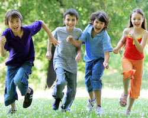

(Psycho)motoriek

U kunt met uw kind bij ons terecht voor behandeling van de volgende problematieken:
Behandeling van kinderen met een vertraagde (motorische) ontwikkeling en leerstoornissen van 0 tot 18 jaar.
- Ontwikkelingsstimulatie bij prematuren, baby's, peuters en kleuters
- Lichaamsbesef en lateralisatie
- Fijne motoriek en schrijfmotoriek
- Grove motoriek: evenwicht, lichaamscoördinatie en automatisatie
- Relaxatie Sherborne
- Visuele waarneming en geheugen
- Ruimtelijk inzicht en representatie
Werkhouding bij:
- Concentratieproblemen
- Dyspraxie
- Niet-verbale leerstoornis
- Hyperactiviteit
- Autisme
Revalidatie:
- Houdingscorrectie
- Ademhalingsoefeningen en autogene drainage
- Revalidatie van aangeboren en verworven neurologische problematieken bij kinderen